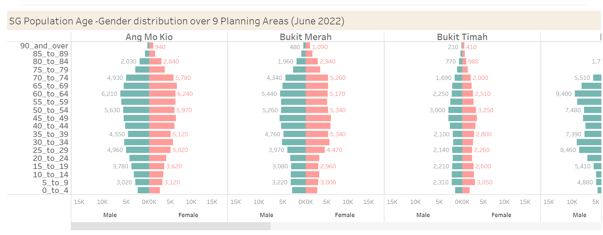
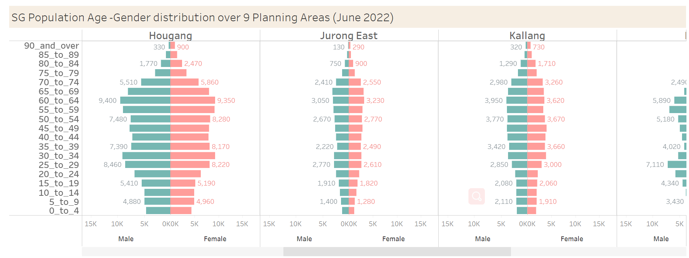
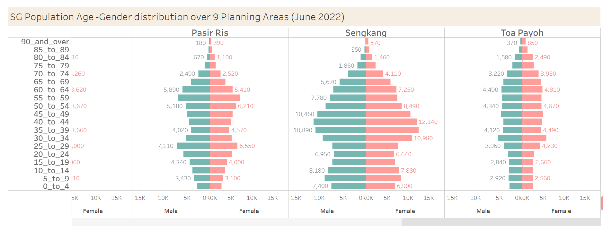

pacman::p_load(ggiraph,tidyverse,readxl)Take Home Exercise 02
Remaking peer’s original design by improving chart’s clarity and aesthetics and creating an alternative design if needed.
1. Overview
In this Take-home Exercise 2, I have chosen one of my peer’s Take-home Exercise 1 tableau submissions and analysed the charts in terms of clarify and aesthetics. In the same time, I also used R to remake the original design by using data visualisation principles and best practices learnt in previous two classes.
2.Critique
2.1 Original Design
The original design is shown below:

  As we all known, the task of Take-home exercise 1 is to reveal the demographic structure of Singapore at planning area level by using age-sex pyramid method. The above design showed the demographic structure successfully. Yet, this design can be improved in terms of following criteria.
2.2 Clarity
(a) Graph Title
The graph title can deliver the information clearly. But I think it is a bit too long. Maybe can be shorter. For example, can name it as SG Age-Sex Population Pyramids. We don’t need to say again we choose nine area because we showed nine pyramids.
(b) Axes Labeling
The design did not add the axes labels. It would bring some misunderstanding about the data. So I think we can add the “Age” on the left side and the “Population” on the bottom side. It also added the gender labels on the bottom side and I think it’s good because it can bring a clear information about the gender differences.
For every pyramid, it has been added the area name label, which is very clear to show the specific area’s situation.
2.3 Aesthetics
(a) Alignment- Graph Title
In my opinion, the title aligning the pyramid area would be better than aligning the left side of the view.
(b) The texts of population amount
When you point to one of the pyramids, it would show the amount of population automatically. So I think the text of the number can be removed.
(c) The display sequence of pyramids
The take-home exercise 1 requires us to display the nine pyramids on one view by using trellis display but this design needs us to use the scrolling bar to see the whole view. It’s not really fit for the requirement.
2.4 Sketch of Proposed Design
- Using R to improve the original visualisation
3.1 Step by step description
1) Installing and loading R packages. Three packages will be installed and loaded. They are : ggiraph, tidyverse and readxl.
2) Importing data. Data import was accomplished using read_csv() of the readr package.
pop <- read_csv("data/respopagesextod2022.csv")3) Read the head data:
head(pop)# A tibble: 6 × 7
PA SZ AG Sex TOD Pop Time
<chr> <chr> <chr> <chr> <chr> <dbl> <dbl>
1 Ang Mo Kio Ang Mo Kio Town Centre 0_to_4 Males HDB 1- and 2-Room … 0 2022
2 Ang Mo Kio Ang Mo Kio Town Centre 0_to_4 Males HDB 3-Room Flats 10 2022
3 Ang Mo Kio Ang Mo Kio Town Centre 0_to_4 Males HDB 4-Room Flats 10 2022
4 Ang Mo Kio Ang Mo Kio Town Centre 0_to_4 Males HDB 5-Room and Exe… 30 2022
5 Ang Mo Kio Ang Mo Kio Town Centre 0_to_4 Males HUDC Flats (exclud… 0 2022
6 Ang Mo Kio Ang Mo Kio Town Centre 0_to_4 Males Condominiums and O… 50 20224) First, we need to calculate the frequency count of the total population in Singapore by gender(Sex), age(AG), and planning area(PA). In the code chunk, we can use group_by() to group the orders by age, gender, and planning area. Afrer that, we can use summarise() of dplyr package to compute the amount of residents.
freq_pop <- pop %>%
group_by(`AG`, `Sex`,`PA`) %>%
summarise('Count'= sum(`Pop`)) %>%
ungroup()
head(freq_pop)# A tibble: 6 × 4
AG Sex PA Count
<chr> <chr> <chr> <dbl>
1 0_to_4 Females Ang Mo Kio 2480
2 0_to_4 Females Bedok 4970
3 0_to_4 Females Bishan 1320
4 0_to_4 Females Boon Lay 0
5 0_to_4 Females Bukit Batok 4400
6 0_to_4 Females Bukit Merah 28005) We need to sort the data based on the categorical age group assigned in the original dataset. We can use mutate() to change the order and then use arrange() of dplyr package to sort. And then display the hold table.
order <- c("0_to_4", "5_to_9", "10_to_14", "15_to_19", "20_to_24", "25_to_29", "30_to_34", "35_to_39", "40_to_44", "45_to_49", "50_to_54", "55_to_59", "60_to_64", "65_to_69", "70_to_74", "75_to_79", "80_to_84", "85_to_89", "90_and_over")
sorted_pop <- freq_pop %>%
mutate(AG = factor(AG, levels = order)) %>%
arrange(AG)
sorted_pop# A tibble: 2,090 × 4
AG Sex PA Count
<fct> <chr> <chr> <dbl>
1 0_to_4 Females Ang Mo Kio 2480
2 0_to_4 Females Bedok 4970
3 0_to_4 Females Bishan 1320
4 0_to_4 Females Boon Lay 0
5 0_to_4 Females Bukit Batok 4400
6 0_to_4 Females Bukit Merah 2800
7 0_to_4 Females Bukit Panjang 2730
8 0_to_4 Females Bukit Timah 1750
9 0_to_4 Females Central Water Catchment 0
10 0_to_4 Females Changi 60
# … with 2,080 more rows6) Because the take-home exercise needs us to choose nine planning areas. So, base on the original design, I choose “Ang Mo Kio”, “Bukit Merah”, “Bukit Timah”, “Hougang”, “Jurong East”, “Kallang”, “Pasir Ris”, “Sengkang”, “Toa Payoh” nine planning areas. And then display the whole table of nine planning areas.
PA_sorted_pop <- filter(sorted_pop,PA %in% c("Ang Mo Kio","Bukit Merah","Bukit Timah","Hougang","Jurong East","Kallang","Pasir Ris","Sengkang","Toa Payoh"))
PA_sorted_pop# A tibble: 342 × 4
AG Sex PA Count
<fct> <chr> <chr> <dbl>
1 0_to_4 Females Ang Mo Kio 2480
2 0_to_4 Females Bukit Merah 2800
3 0_to_4 Females Bukit Timah 1750
4 0_to_4 Females Hougang 4430
5 0_to_4 Females Jurong East 1130
6 0_to_4 Females Kallang 1810
7 0_to_4 Females Pasir Ris 2730
8 0_to_4 Females Sengkang 6900
9 0_to_4 Females Toa Payoh 2550
10 0_to_4 Males Ang Mo Kio 2530
# … with 332 more rows3.1.1 Plot Age-Sex Population Pyramid
Static Age-sex population pyramid
1) Using ggplot2 to plot the age-sex population pyramid.
2) Changed the color of the bar chart depending on the original design.
geom_col() used to create the bar chart.
ifelse() of Base R function was convert population count of Male residents to be negative, so that their data will be plotted on the left side of the pyramid.
facet_wrap() Used to display nine planing area’s pyramids on the one view .
Changed the color to light-green for males and light-pink for females.
p <- ggplot(PA_sorted_pop, aes(x = ifelse(Sex == "Males", yes = -Count, no = Count),
y = AG, fill = Sex)) +
geom_col() +
scale_x_continuous(breaks = seq(-150000, 150000, 50000),
labels = paste0(as.character(c(seq(150, 0, -50), seq(50, 150, 50))),"k")) +
labs (x = "Population", y = "Age", title='Singapore Age-Sex Population Pyramid 2022') +
theme_bw() +
theme(axis.ticks.y = element_blank()) +
scale_fill_manual(values = c("Males" = "#7b8b6f", "Females" = "lightpink"))+
facet_wrap(~ PA)
p
- In order to convert the static pyramid to an interactive chart, we can use ggplotly() of the plotly library. After using this package, hoving your mouse on the bar, you can see the detail information of the different ages and genders. We also need to use fig.width and fig.height to adjust the height and width.
library(plotly)
ggplotly(p,session="knitr")4. Learning Points
Take-home exercise 2 remind me to consider the user experiences. Because we want others can understand our charts’ meaning so we need to think more from the users’ perspective. In addition, I also learned how to use ggplot2 and face_wrap(）. Putting different charts on one view can help us to get a better understanding about data.